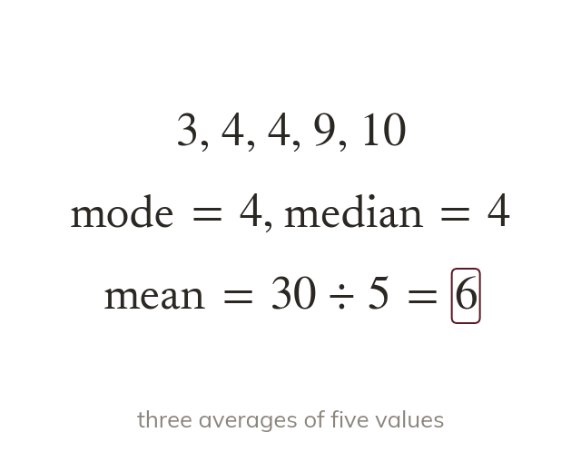
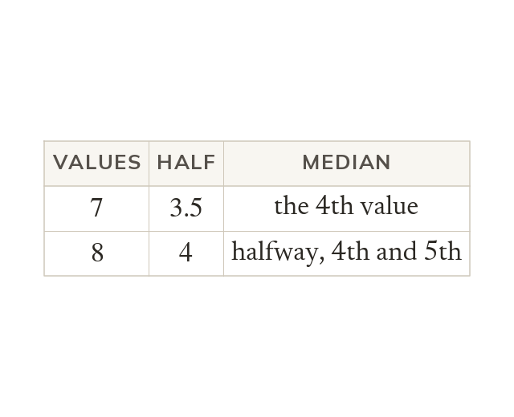
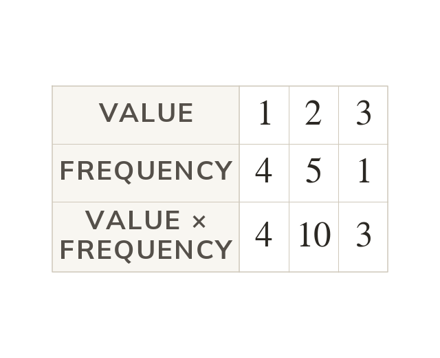
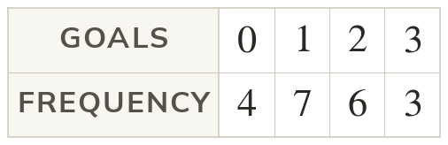
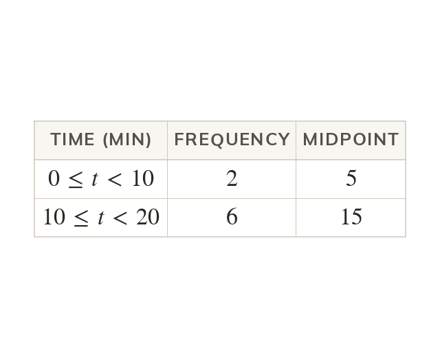
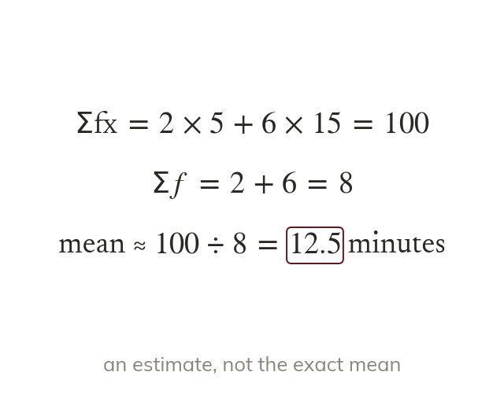
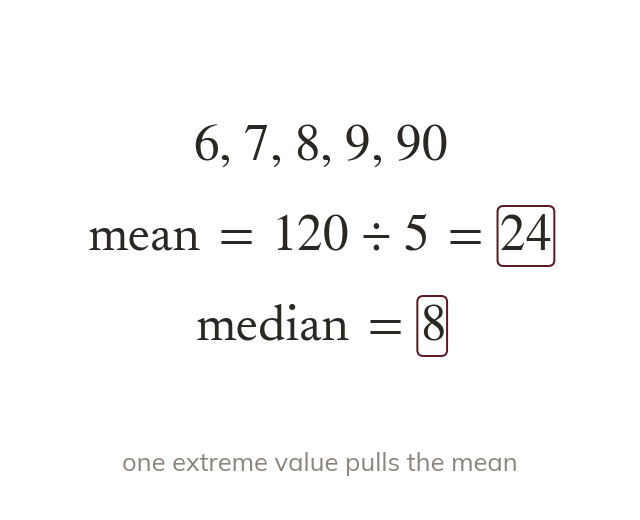
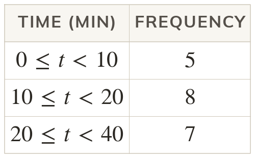
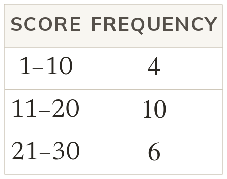

Three averages
The mode is the most common value and the median is the middle value in order. The mean is the total divided by the number of values, x̄ = Σx/n.
An average sums up a data set in one number, and the right choice depends on the data. The mean of grouped data found here is an estimate, and the next lessons find the median, quartiles and spread of the same kinds of table.
Work down the page at your own pace. Write every answer in your book first, then click to check it.
Read each card, then follow the worked examples one step at a time.

The mode is the most common value and the median is the middle value in order. The mean is the total divided by the number of values, x̄ = Σx/n.

Put the values in order. If is a whole number, the median is halfway between that value and the next; if not, round up.

Each value is counted f times, so the total is Σfx and the number of values is Σf. The mean is x̄ = Σfx/Σf.

Pick an answer. If it's wrong, the feedback tells you which mistake it was.
Write the blanks in your book first, then tap each one to check.
Read each card, then follow the worked examples one step at a time.

In a grouped table the values in each class are not known. Each value is taken as its class midpoint, so the mean is an estimate.

Multiply each midpoint by its frequency and add. Then divide by the total frequency, x̄ = Σfx/Σf.

The mode suits qualitative data, and the median suits data with an extreme value. The mean uses every value, but one extreme value pulls it.


Pick an answer. If it's wrong, the feedback tells you which mistake it was.
Write the blanks in your book first, then tap each one to check.
Finished? Next lesson: 12.S2.2 Other Measures of Location.
For each skill, tap the one that is true for you today. Your Revise pages start with anything you mark Not yet.
Your ratings are saved on this device only.
Log in, then search for a code to practise that skill.